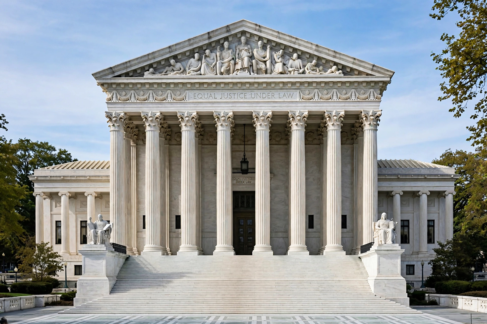

| Chief Justice of the United States | |
|---|---|
 | |
| Incumbent | John Roberts (since 29 September 2005) |
| Style | Mr. Chief Justice; The Honorable |
| Type | Chief justice, head of the federal judiciary |
| Appointer | The President, with advice and consent of the Senate |
| Term length | Life tenure (during good behaviour) |
| Constituting instrument | Constitution of the United States |
| First holder | John Jay |
| Succession | First in seniority among the associate justices |
The chief justice of the United States is the chief judge of the Supreme Court of the United States and is the highest-ranking officer of the U.S. federal judiciary. Article II, Section 2, Clause 2 of the U.S. Constitution grants plenary power to the president to nominate, and with the advice and consent of the Senate, appoint "Judges of the supreme Court" — the chief justice is one of the nine justices. Like the associate justices, the chief justice is appointed for life and may be removed only by impeachment.
The chief justice has significant influence in selecting the cases the Court hears, presides over oral arguments and the justices' conferences, and — when in the majority — decides who writes the Court's opinion. In addition, the chief justice serves as head of the federal judiciary, chairs the Judicial Conference of the United States, appoints members of specialized courts such as the Foreign Intelligence Surveillance Court, and performs ceremonial duties, most visibly administering the presidential oath of office. The chief justice also presides over presidential impeachment trials in the Senate, as required by Article I of the Constitution.
The office was established by the Judiciary Act of 1789, and the first chief justice, John Jay, was appointed by George Washington. Early chief justices struggled to give the young Court prestige; John Marshall (1801–1835), the longest-serving chief justice, transformed it into a co-equal branch of government through opinions such as Marbury v. Madison (1803), which established judicial review. Seventeen men have held the office. Several chief justices had previously been associate justices (including Edward Douglass White, Charles Evans Hughes, Harlan F. Stone, and William Rehnquist), while William Howard Taft — the only person to serve as both president of the United States and chief justice — led the Court from 1921 to 1930.
The chief justices, in order: John Jay (1789–1795); John Rutledge (1795, recess appointment, not confirmed); Oliver Ellsworth (1796–1800); John Marshall (1801–1835); Roger B. Taney (1836–1864); Salmon P. Chase (1864–1873); Morrison Waite (1874–1888); Melville Fuller (1888–1910); Edward Douglass White (1910–1921); William Howard Taft (1921–1930); Charles Evans Hughes (1930–1941); Harlan F. Stone (1941–1946); Fred M. Vinson (1946–1953); Earl Warren (1953–1969); Warren E. Burger (1969–1986); William Rehnquist (1986–2005); and John Roberts (2005–present).
This article is a recreation from memory in the style of Wikipedia.